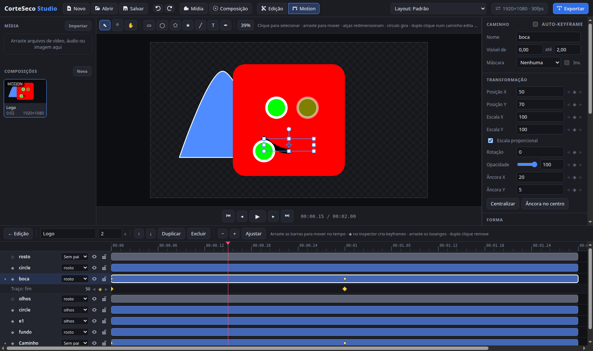

Edite o vídeo e anime os gráficos no mesmo lugar
CorteSeco Studio é um editor de vídeo multitrack com um módulo de motion design embutido. Roda como aplicativo no desktop e direto no navegador.

Editor de vídeo
O básico bem resolvido, sem conta, sem nuvem e sem marca d'água.
Tracks ilimitadas
Vídeo, áudio, imagem e texto em quantas camadas precisar. Oculte, silencie, trave e reordene.
Corte rápido
Arraste, apare e divida clipes. O modo inserção encaixa uma cena empurrando as demais.
Keyframes
Anime posição, tamanho, rotação, opacidade e volume de qualquer clipe ao longo do tempo.
Transições e entradas
Combinar, deslizar e flash entre cenas, além de animações de entrada e saída por clipe.
Qualquer formato de tela
16:9, 9:16, 1:1, 4:5 ou 4K, em pixels e FPS que você define.
Exportação MP4 e MP3
Vídeo em H.264 com áudio AAC, ou só o áudio. Projetos salvos em um arquivo JSON.
Motion design
Composições com camadas próprias, no estilo dos programas de animação. Prontas, entram na timeline como um clipe transparente por cima do vídeo.
Formas e texto
Retângulo, elipse, polígono, estrela, linha, texto e imagens. Cor, traço e arredondamento animáveis.
Curvas de aceleração
Cada keyframe tem sua curva: predefinições como quicar e elástico, ou uma bezier ajustada à mão.
Importar SVG
Traga logos e ícones: cada forma vira uma camada e cada grupo vira um pai para animar em conjunto.
Caneta e morph
Desenhe caminhos livres e transforme uma forma em outra movendo os pontos entre keyframes.
Traço que se desenha
Apare o início e o fim do traço para fazer linhas e contornos surgirem sozinhos.
Hierarquia e máscaras
Ligue camadas a um pai para mover tudo junto e use qualquer camada como máscara de outra.
Um título animado em quatro passos
Do zero até o vídeo exportado.
- Crie uma composiçãoClique em "Composição" na barra superior. Ela nasce do tamanho do projeto.
- DesenheUse as ferramentas acima do palco para criar a barra e o texto do título.
- AnimeClique em ◆ ao lado de uma propriedade, mova o playhead e mude o valor. Ou aplique uma animação pronta de entrada.
- Use no vídeo"Usar na timeline" coloca a composição sobre o vídeo. Exporte em MP4.
Instalar
Baixe o instalador na página de versões, ou rode a partir do código-fonte. É preciso ter o Node.js instalado.
# baixar o código e instalar as dependências git clone https://github.com/USUARIO/REPOSITORIO.git cd REPOSITORIO npm install npm run dev # abre o app desktop com recarregamento npm run dev:web # versão de navegador (Chrome/Edge) npm run dist:appimage # gera o AppImage para Linux em release/ npm run dist:win # gera o instalador .exe (rodar no Windows)